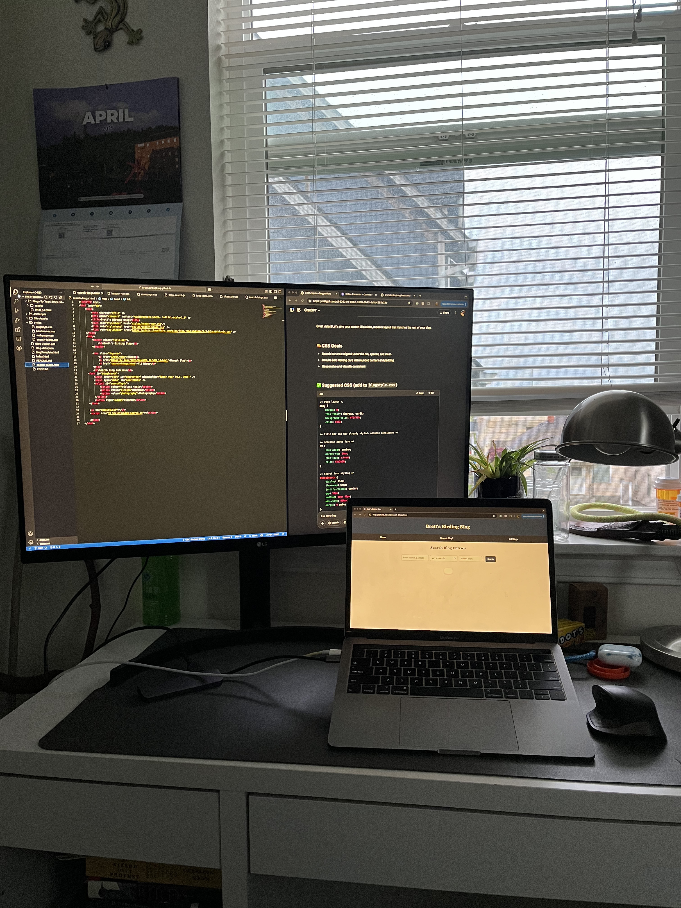

I've made a lot of progress today on the site. Yesterday it was very barebones, but now there are exciting features. I still need to do code clean-up and UI graphic design stuff or whatever to make the site look more (less) in development...
Here's a cool shot from earlier in the day when the lighting was better, looks pretty cozy to me!
 It feels nice to be excited about a random personal project again... Last time I really felt like this was at UBC when I was working on the SRCNN youtube series. Check that out below if you're curious! I'm working on the final episode currently.Literally the arrangement of those videos above took me like 30-45mins dang... Whatever, it was worth it. They were fun videos to make and I look forward to making more videos in the future. Hoping to make a video about this site and how you can make your own! Anyway, I justed wanted to pop in for a short (mid-dev) entry for history's sake.
I hope you all have a beautiful day, thanks for reading!